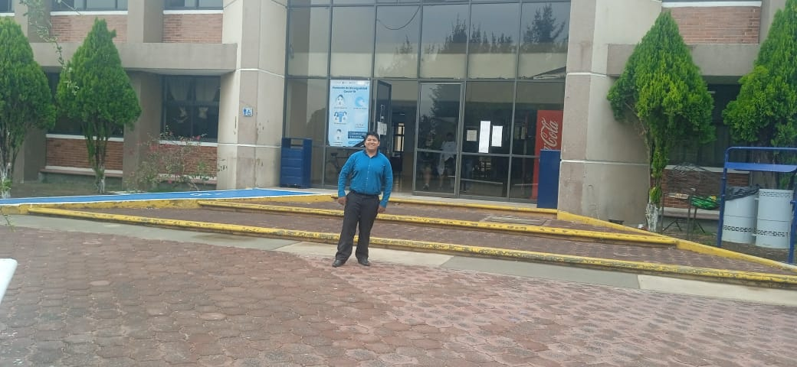
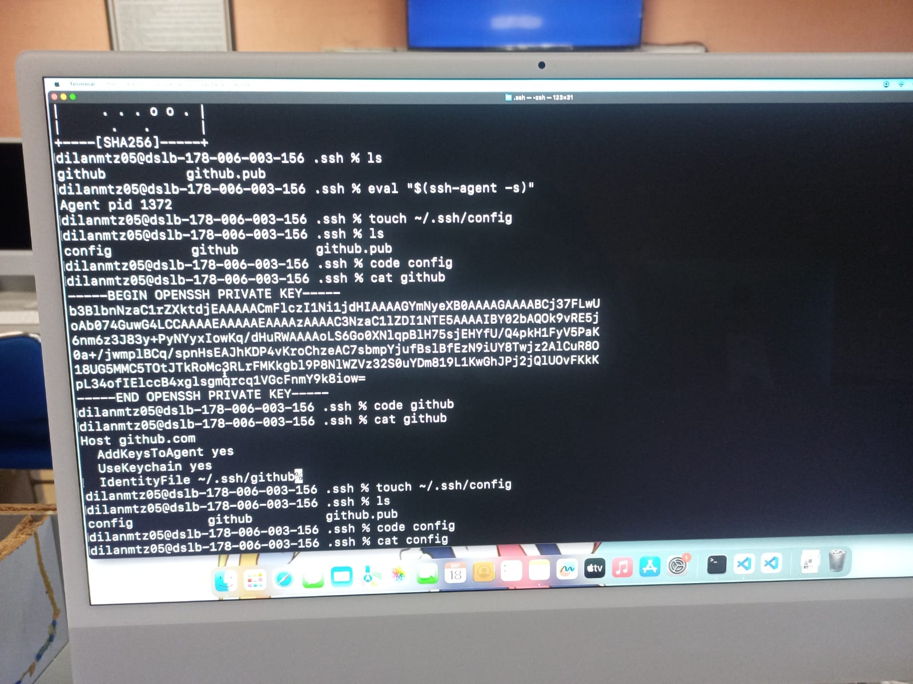
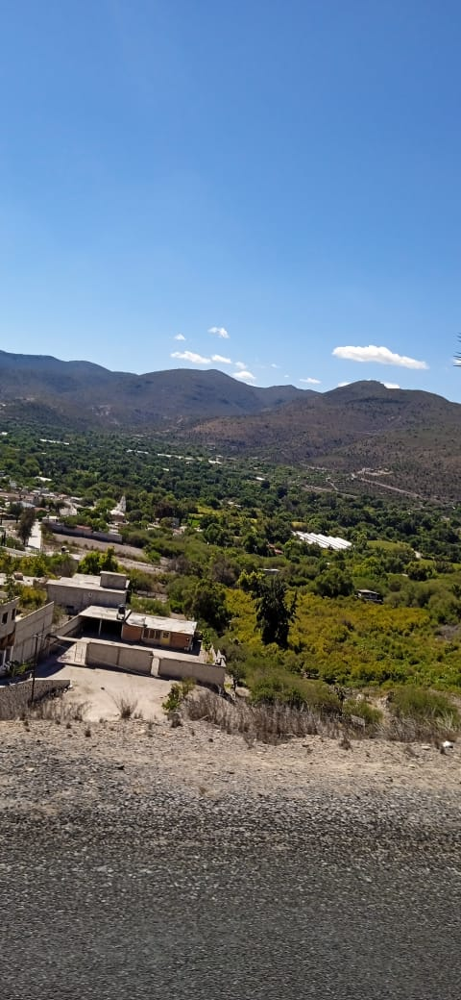

Me llamo Alejandro cruz Martínez hijo de Ausencio Cruz Maqueda y de María Esther Martinez Hernández, nací el 4 de diciembre de 2005 en un municipio llamado Tlaxcoapan hidalgo y actual mente vivo en el Llano primero y en la actualidad tengo 17 años a punto de cumplir ya los 18 años, soy de estatura promedio de 1.70m, soy un poco gordito esto ya es de familia, no tengo ningún vicio por el momento vengo de una familia de 5 integrantes yo mis dos hermanos, mi papa y mama, yo soy el hijo mayor de los 3 , crecí con muchos problemas de salud pero gracias al esfuerzo de mis padres ahora soy el primero en entrar a la universidad de toda mi familia
Yo estudio Tics porque me agradan las nuevas tecnologías y como se implementan además empecé a programar porque me gusta estar en la computadora además desde la secundaria estudié programación y en la prepa solo un año y medio por la pandemia y por diversión, pero tampoco e programado al cien por ciento, pero pues si me interesa aprender un poco más de lo poco que se y no me caería mal ganar dinero por algo que me gusta hacer, además me gustaría comprarme una moto deportiva ya que me dijeron que se gana bien y que es una profesión que se encuentra en tendencia y por lo tanto es muy requerida
Vengo de un pueblito llamado Llano primero en el municipio de Chilcuautla en el estado de hidalgo el cual se encuentra un poco alejado de la autopista que es donde se espera el transporte público es un pueblito no muy grande pero ay otra manera de llegar y es por la salida de Mixquiahuala de Juárez que va hacia tuni de allí a texca y de allí al municipio en el cual ay otro transporte público el cual pasa por la entrada de mi casa, vivo sobre la carretera principal la cual viene desde la autopista en una entrada de cimentado al fondo a la izquierda en una casa color verde de un solo nivel la cual tiene dos ventanas hacia enfrente de la carretera y además ay una palmera y una sombra de mesquite
Autor: Alejandro Cruz Martinez Correo: 230110322@itsoeh.edu.mx